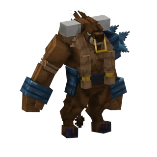

Serveur Minecraft d'aventure · Java 26.2
Historia
Un royaume dessiné à la main. Plus de 500 créatures.
Plus de 100 boss tapis dans leurs antres.
Nouveau ? Lis le guide du débutant · Ancien de 2023 ? Voir ce qui a changé
Chapitre I
Un monde fait main
Survole un biome pour découvrir sa légendeTouche un biome pour découvrir sa légende · glisse pour voyager
- Pics de granit : Des pitons de granite rose sous la neige, des éboulis et des séracs. Le griffon y a son aire, et les nains y creusent leurs mines. Légende : Le Griffon. Créatures : Griffon, nains des mines, golems de roche.
- Forêt boréale : Épicéas et pins enneigés, bouleaux tordus, congères et rochers givrés. Le Yéti dort dans sa grotte. Légende : Le Yéti. Créatures : Ours, vikings, wendigo.
- Taïga ancienne : Des épicéas ancestraux immenses, des tapis de mousse et des ruisselets. La nuit, quelque chose d'affamé rôde entre les troncs. Légende : Le Wendigo. Créatures : Ours, vikings, wendigo.
- Lande de bruyère : Bruyère violette et fougère aigle, tourbières, cairns et pierres dressées. Magnus, champion de la lande, attend les défis dans son arène. Légende : Magnus. Créatures : Vikings, squelettes de la tour de guet, rats de l'ossuaire, Oog l'ogre.
- Plaines : Prairies fleuries, bosquets et haies bocagères, tournesols sauvages et hameaux. Kriger garde son église. Légende : Kriger. Créatures : Villageois, canards, gobelins.
- Falaises blanches : De grandes parois éclatantes de calcite, des cascades, et des replats d'herbe semés de fleurs blanches. Le Minotaure garde son labyrinthe. Légende : Le Minotaure. Créatures : Nains, golems, griffon.
- Forêt lunaire : Un bois elfique au crépuscule éternel. Troncs blancs, feuillages violets, cristaux d'améthyste qui luisent au sol. Légende : La Druidesse elfe. Créatures : Elfes, golems de cristal, lucioles.
- Bois hanté : Chênes noirs, toiles d'araignée, champignons et ossements blanchis. Une cathédrale noire se dresse au cœur du bois. Légende : Azriel. Créatures : Bestiaire d'Halloween, ents flétris, chauves-souris vampires, Roi Citrouille.
- Marais maudit : Eaux croupies, troncs pourris, champignons et ossements. Le dragon Mortos dort dans son cimetière. Légende : Mortos. Créatures : Zombies mutants, ents flétris, chauves-souris vampires.
- Vallée des sakuras : Cerisiers étagés, tapis de pétales roses, bambous et mousse, nénuphars sur l'eau limpide. Légende : Hana. Créatures : Ents des cerisiers, elfes.
- Bambouseraie brumeuse : Des nappes de bambous dans la brume, des érables rouges et des pierres dressées. Wu y médite dans son pavillon de l'encre. Légende : Wu, maître d'encre. Créatures : Pandas, mimiques.
- Jungle ancestrale : Arbres géants et lianes, cascades, colonnes brisées et temples engloutis par la mousse. Légende : Le Roi des ents. Créatures : Crocodiles, tortues alligators, pandas, ents.
- Désert : Des dunes écrasées de chaleur, des aiguilles de grès, des ossements, et des oasis de palmiers. Le tombeau d'Anubis attend sous le sable. Légende : Anubis. Créatures : Momies, soldats-cactus, lézards épineux, scolopendres géantes.
- Steppe embrasée : Herbes sèches couleur de braise, arbres calcinés, orgues de basalte et cheminées de feu. La porte des enfers s'ouvre ici. Légende : Cerbère. Créatures : Zombies mutants, gobelins, drakes du Nether, ents infernaux.
- Sources ardentes : Bassins turquoise et ocre étagés, concrétions de travertin et cheminées minérales. Le Phénix y a fait son nid. Légende : Le Phénix. Créatures : Drakes du Nether, ents infernaux, chiens des enfers.
- Caldeira : Un cratère de basalte noir, des lacs de lave, des orgues de basalte et de l'obsidienne. L'air est chargé d'étincelles. Légende : Flamental. Créatures : Piglins, démon du chaos.
- Falaises côtières : Des falaises d'andésite battues par les vagues, de l'herbe saline et des épaves échouées. Méduse garde son temple. Légende : Méduse. Créatures : Pirates, hommes-poissons, roi homard.
- Abysses : Un océan profond. Des forêts de kelp géant, des ossements de léviathan et des cheminées de magma qui crachent des bulles. Légende : Le Kraken. Créatures : Mégalodon, anguilles électriques, régalecs.
Chapitre II
créatures à découvrir
+ de 100 boss légendaires
Elfes, nains, gobelins, vikings, pirates, morts-vivants, golems, bêtes des abysses… Triées sur le volet, et plus redoutables à mesure que tu t'éloignes du centre du royaume.
Explorer le bestiaire des légendes →Chapitre III
Les peuples du royaume
Neuf peuples se partagent les forêts, les mines et les mers. Retourne une bannière pour lire sa légende.
Chapitre IV
Une légende par biome
Plus de 100 boss règnent sur le royaume, chacun dans son antre. Leur repaire n'est écrit nulle part.
Falaises blanches
Le Minotaure
Gardien du labyrinthe

Chapitre V
Écris ta propre légende
Quatre métiers font ton niveau, de 0 à 100. Plus il monte, plus tu peux t'aventurer loin du centre, là où vivent les créatures les plus dangereuses.
- Niv. 30 · première spécialité
- Niv. 60 · seconde spécialité
- Niv. 100 · le bout du monde
Jusqu'à 2 500 blocs du centre · créatures de niveau 25
Tout sur la progression →Chapitre VI · bientôt
Quarante étages.
Un boss à chacun.
Et avant la Tour : quatre donjons en trois difficultés, quatre raids à affronter en groupe.
Étage 1 / 40
En constructionChapitre VII
Le royaume en images
Le journal du royaume
Dernières nouvelles
Des paysages encore plus vivants
Collines boisées, taïga claire, érablière d'automne, cerisiers sous la neige et côtes plus découpées.
Des barres de vie et des fiches lisibles
Le nom des créatures se lit de loin, et la fiche du bestiaire s'affiche sur parchemin.
Et la suite ? Voir la feuille de route →
Questions fréquentes
Avant de partir à l'aventure
Une autre question ? On répond sur le Discord.
Quelle version de Minecraft faut-il ?
Minecraft Java Edition, version 26.2. Le serveur n'accepte pas l'édition Bedrock pour l'instant.
Faut-il installer des mods ?
Non. Le pack de ressources se télécharge tout seul à la connexion : il apporte les créatures, les menus et les musiques. Les mods d'optimisation (Sodium, Iris…) fonctionnent ; les mods de triche sont interdits.
Le serveur est-il gratuit ?
Oui, entièrement. La boutique ne vend que des cosmétiques, des titres et la piste premium du passe : tout ce qui rend plus fort se gagne en jouant.
Quand ouvre le serveur ?
Une bêta fermée arrive d'abord, puis l'ouverture à tous. Les dates sont annoncées sur le Discord.
J'étais sur Historia en 2023, que se passe-t-il ?
Le monde est entièrement neuf et l'économie repart de zéro pour tout le monde. Les anciens joueurs seront les premiers invités à la bêta fermée.
Je ne vois pas les créatures, que faire ?
Le pack de ressources a sûrement été refusé. Dans la liste des serveurs, clique sur Historia, puis Modifier, et règle « Packs de ressources » sur « Activés ».
Le royaume t'attend
- 1Lance Minecraft Java 26.2
- 2Ajoute le serveur historia.mine.fun
- 3Accepte le pack de ressources
Tu étais là en 2023 ? Les anciens joueurs seront les premiers invités à la bêta fermée.